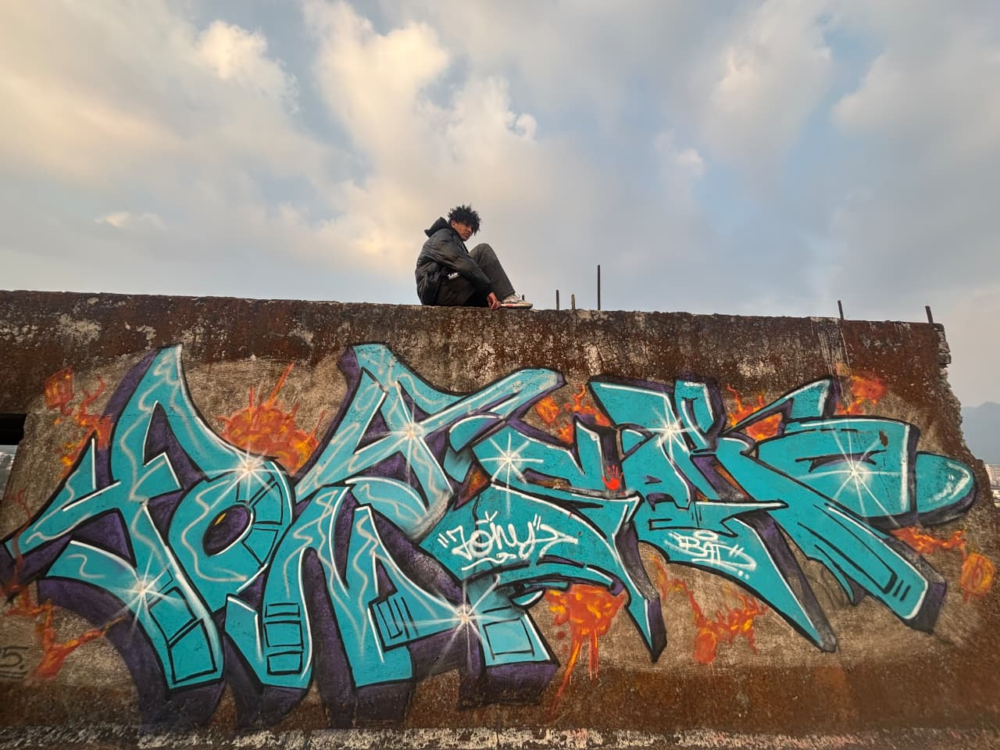
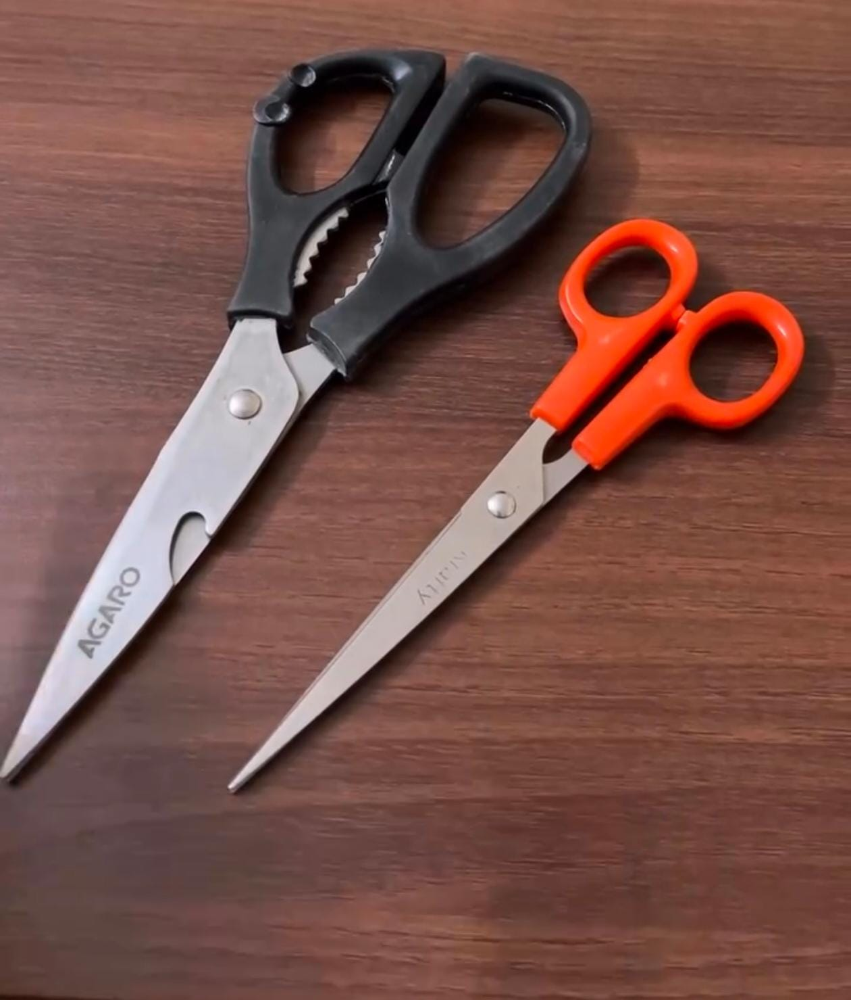
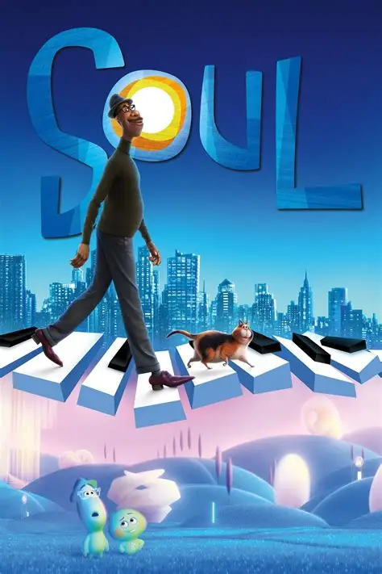
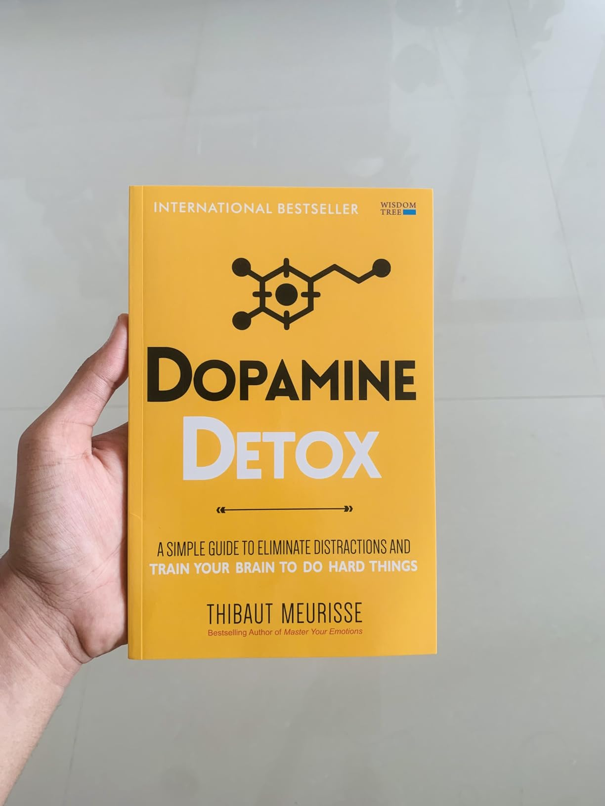

"Graffiti Art"
Graffiti art is a form of visual communication that has evolved from illegal markings on public spaces to a recognized and celebrated art form, reflecting cultural and social messages.
Graffiti art is a form of visual communication that has evolved from illegal markings on public spaces to a recognized and celebrated art form, reflecting cultural and social messages.

These are two different scissor desgin, though any of these are not bad design both are used for different purpose like one is simple small scissor which is used in office or school work so it is light and the grip holes are similar while the other is kitchen scissor so the grip is better cause it will be used to cut more harder materials

Watches Soul pixar movie, basically focuses on Joe Gardner, a musician who believes his life’s purpose is jazz. After a near-death experience, he learns that meaning isn’t found only in achievements. The film suggests that life’s true value lies in everyday experiences, connections, and simply being alive.

Got to know mordern habits like social media, junk food, video games, and constant notifications give your brain quick dopamine spikes. These activities are easy and instantly rewarding And because of these easy rewards activities which need high concenteration and focus become difficult for us to carry on

What surprised me most about the event wasn’t the competition itself, but how quickly everyone started taking the rules seriously. The games were simple, but the atmosphere made them feel intense. Timers, crowd reactions, sudden silence, and the pressure of elimination completely changed how people behaved. It made me realize how much game design relies on emotion rather than complexity. Even small things — countdown sounds, space layout, costumes, and movement — created tension. The event felt like a mix of theatre, interaction design, and psychology. For a while, the campus stopped feeling like a campus and started feeling like a constructed world with its own rules.
I recently learned about the concept of affordance in design — the idea that objects visually suggest how they should be used. A button invites clicking. A handle suggests pulling. A vinyl record almost makes you want to spin it. What fascinated me is how good design reduces the need for explanation. The best interactions feel natural because the object itself communicates its purpose. I started noticing affordance everywhere — apps, doors, vending machines, game interfaces, even my own portfolio website.

Watches Soul pixar movie, basically focuses on Joe Gardner, a musician who believes his life’s purpose is jazz. After a near-death experience, he learns that meaning isn’t found only in achievements. The film suggests that life’s true value lies in everyday experiences, connections, and simply being alive.
Watches Soul pixar movie, basically focuses on Joe Gardner, a musician who believes his life’s purpose is jazz. After a near-death experience, he learns that meaning isn’t found only in achievements. The film suggests that life’s true value lies in everyday experiences, connections, and simply being alive.
It was chaotic, overcrowded, exhausting — and weirdly unforgettable. By the end of the night, the campus looked destroyed. Empty bottles everywhere, tired volunteers, people sitting silently on staircases. But somehow, it also felt the most alive I had seen it.
pixar movie, basically focuses on Joe Gardner, a musician who believes his life’s purpose is jazz. After a near-death experience, he learns that meaning isn’t found only in achievements. The film suggests that life’s true value lies in everyday experiences, connections, and simply being alive.